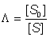

|
|
Effect of solute partition on the kinetics of immobilised enzymesThe solution lying within a few molecular diameters (l 10 nm) from the surface of an immobilised enzyme will be influenced by both the charge and hydrophobicity of the surface. Charges are always present on the surface of immobilised enzyme particles due to the amphoteric nature of enzymes. Where these positive and negative charges are not equally balanced, the net charge on the surface exerts a considerable effect over the properties of the microenvironment. This surface charge, easily produced by the use of ion-exchange or similar charged matrices for the immobilisation, repels molecules of similar charge while attracting those possessing opposite charge. The force of attraction or repulsion due to this charge is significant over molecular distances but decays rapidly with the square of the distance from the surface. A partitioning of charged molecules (e.g., substrates and products) occurs between the bulk solution and the microenvironment; molecules of opposite charge to the immobilised enzyme surface being partitioned into the microenvironment, whereas molecules possessing similar charge to the immobilised enzyme surface are expelled, with equal effect, into the bulk solution. The solute partition may be quantified by introduction of the electrostatic partition coefficient (L) defined by, (3.1) where [C0n+] and [A0n-] represent each cation and anion bulk concentration, [Cn+] and [An-] represent their concentration within the microenvironment and n is the number of charges on each ion. L has been found to vary within the range of about 0.01 to 100; L being greater than unity for positively charged enzymic surfaces and less than unity for negatively charged surfaces. The effect of partition on positively and negatively charged molecules is equal but opposite. For a positively charged support, cations are partitioned away from the microenvironment whereas the concentration of anions is greater within this volume compared with that in the bathing solution. j depends on the density of charge on and within the immobilised enzyme particle. It is greatly influenced by the ionic strength of the solution. At high ionic strength the raised concentration of charged solute molecules counteracts the charge on the particles, reducing the electrostatic forces and causing j to approach unity. Assuming Michaelis-Menten kinetics, the rate of reaction catalysed by an immobilised enzyme is given by equation 1.9 where the substrate concentration is the concentration within the microenvironment. (3.2) If the substrate is positively charged, it follows from equation 3.1 that  (3.3) (3.4) where (3.5) Kmapp is the apparent Michaelis constant that would be determined experimentally using the known bulk substrate concentrations. If the substrate is negatively charged, the following relationships hold: (3.6) (3.7) The Km of an enzyme for a substrate is apparently reduced if the substrate concentration in the vicinity of the enzyme's active site is higher than that measured in the bulk of the solution (Figure 3.7). This is because a lower bulk concentration of the substrate is necessary in order to provide the higher localised substrate concentration needed to half-saturate the enzyme with substrate. Similar effects on the local concentration of products, inhibitors, cofactors and activators may change the apparent kinetic constants involving these molecules. For example, the apparent inhibition constant of a positively-charged competitive inhibitor is given by, (3.8) Figure 3.7. The effect of immobilisation and ionic strength on the Km of bromelain for its positively-charged substrate, N-a-benzoyl-L-arginine ethyl ester. The support is the negatively-charged poly-anionic polymer, carboxymethyl cellulose (Engasser & Horvath, 1976). ——— free enzyme; ------ immobilised enzyme. If the immobilised enzyme contains a number of groups capable of chelating cations the partition of such cations into the microenvironment is far greater than that described by the electrostatic partition coefficient (j). For example, soluble glucose isomerase needs a higher concentration of magnesium ions, than those required by the immobilised enzyme. It also requires the presence of cobalt ions which do not need to be added to processes involving the immobilised enzyme due to their strong chelation by the immobilised matrix. A high concentration of ionising groups may cause a partitioning of gases away from the microenvironment with consequent effects on their apparent kinetic parameters. It is also a useful method for protecting oxygen-labile enzymes by 'salting out' the oxygen from the vicinity of the enzyme. Differential partitioning of the components of redox couples may have a significant effect on the activity and stability of certain enzymes. For example, papain is stabilised by the presence of thiols, which act as effective reducing agents. However, thiols possess partial negative charges at neutral pHs which causes their expulsion from the microenvironment of papain if it is immobilised on the negatively charged clay, kaolinite. In effect, the redox couple involving thiol and uncharged disulphide, which is not partitioned, becomes more oxidising around this immobilised enzyme. The net effect is a destabilisation of the immobilised papain relative to the free enzyme. pKa ≈ 8 Partition of hydrogen ions represents an important case of solute partition. The pH of the microenvironment may differ considerably from the pH of the bulk solution if hydrogen ions are partitioned into or out of the immobilised enzyme matrix. The binding of substrate and the activity of the immobilised enzyme both depend on the local microenvironmental pH whereas the pH, as measured by a pH meter, always reflects the pH of the bathing solution. This causes apparent shifts in the behaviour of the kinetic constants with respect to the solution pH (Figure 3.8). It is quite a simple process to alter the optimum pH of an immobilised enzyme by 1 - 2 pH units giving important technological benefits (e.g., allowing operation of a process away from the optimum pH of the soluble enzyme but at a pH more suited to the solubility or stability of reactants or products). Figure 3.8. Schematic diagram of the variation in the profiles of activity of an enzyme, immobilised on charged supports, with the pH of the solution.——— free enzyme. ------- enzyme bound to a positively charged cationic support; a bulk pH of 5 is needed to produce a pH of 7 within the microenvironment. ------- enzyme bound to a negatively charged anionic support; a pH of 7 within the microenvironment is produced by a bulk pH of 9. In addition to its affect on solute partition, the localised electrostatic gradient may affect both the Km and Vmax by encouraging or discouraging the intramolecular approach of charged groups within the enzyme, or enzyme-substrate complex, during binding and catalysis. A large number of small energetic gains and losses may complicate the analysis of such overall effects (Table 3.4). As the resultant changes are also reduced by increases in the ionic strength of the solution, these electrostatic effects may be difficult to distinguish from the effects of partition. Table 3.4 The effect of covalent attachment to a charged matrix on the kinetic constants of chymotrypsin for N-acetyl-L-tyrosine ethyl ester (Goldstein 1972)
The changes in kcat may be due to the approach of two positively charged groups during the rate-controlling step in the catalysis Hydrophobic interactions play a central role in the structure of lipid membranes and the conformation of macromolecules including enzymes. They are responsible for the relative solubility of organic molecules in aqueous and organic solvents. These interactions involve an ordered rearrangement of water molecules at the approach of hydrophobic surfaces. The force of attraction between hydrophobic surfaces decays exponentially with their distance apart, halving every nanometer separation. These hydrophobic interactions effectively reduce the dielectric constant of the microenvironment with consequent modification of the acidity constants of acid and basic groups on the enzymes, substrates, products and buffers (Figure 3.9). Similar effects may alter the acidity constants of key substrate binding groups, so affecting the Km of the immobilised enzyme for its substrates. Hydrophobic interactions are unaffected by the ionic strength or pH of the solution but may be neutralised by the presence of neighbouring hydrophilic groups where they are sufficient to dominate the localised structure of the water molecules. Hydrophobic interactions may, therefore, cause the partition of molecules between the bulk phase and the microenvironment. If the surface of the immobilised enzyme particles is predominantly hydrophobic, hydrophobic molecules will partition into the microenvironment of the enzyme and hydrophilic molecules will be partitioned out into the bathing solution. The reverse case holds if the biocatalytic surface is hydrophilic. Partition causes changes in the local concentration of the molecules which, in turn, affects the apparent kinetic constants of the enzyme in a similar manner to that described for immobilised enzyme particles possessing a net charge. An example of this effect is the reduction in the Km of immobilised alcohol dehydrogenase for butanol. If the support is polyacrylamide the Km is 0.1 mM but if the more hydrophobic copolymer of methacrylate with acrylamide is used as the support, the Km is reduced to 0.025 mM. In this example, no difference is noticed in the apparent values for Km using ethanol, a more hydrophilic substrate. A similar effect may be seen in the case of competitive inhibitors (Table 3.5). Gases partitioned out from the microenvironment by the presence of a charged support (e.g., oxygen) are generally partitioned into the microenvironment by hydrophobic supports Figure 3.9. Schematic diagram showing the effect of a hydrophobic support on the pH-activity profile of immobilised enzymes in solutions of low ionic strength. ——— free enzyme; -------enzyme immobilised on a hydrophobic support. The effective decrease in the dielectric constant for the microenvironment reduces the dissociation of charged groups, increasing the pKa of carboxylic acids and reducing the pKa of some basic groups. Table 3.5 The effect of immobilisation using a hydrophobic support on the relative competitive inhibition of invertase
The Ki is reduced where both the inhibitor and support are hydrophobic. Other specific partition effects are associated with particular immobilisation supports. As examples: (a) The apparent Km of glucoamylase for maltose is considerably reduced when the enzyme is immobilised on titanium activated supports; such supports having a specific affinity for some poly-alcohols. (b) Some polyphenolic resins have specific affinities for polysaccharides which assist their partition into the microenvironment.
This page was established in 2004 and last updated by Martin
Chaplin |
||||||||||||||||||||||||||||||||||||||||||||